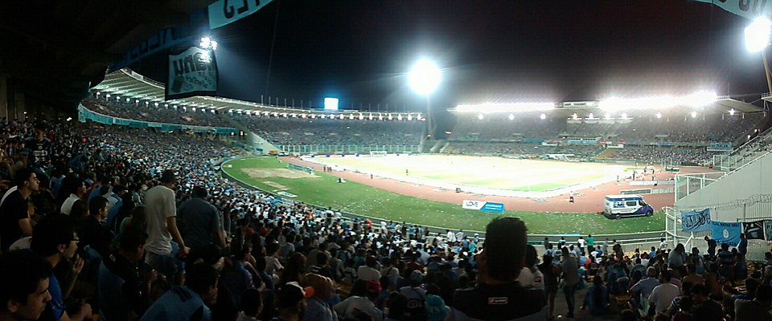
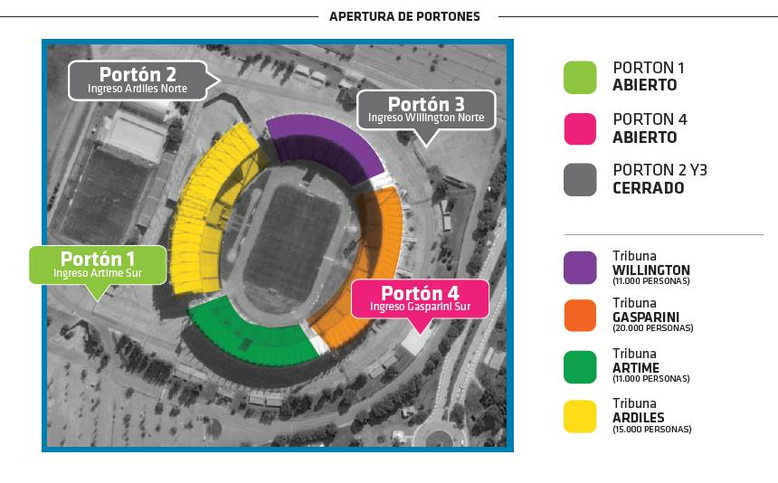
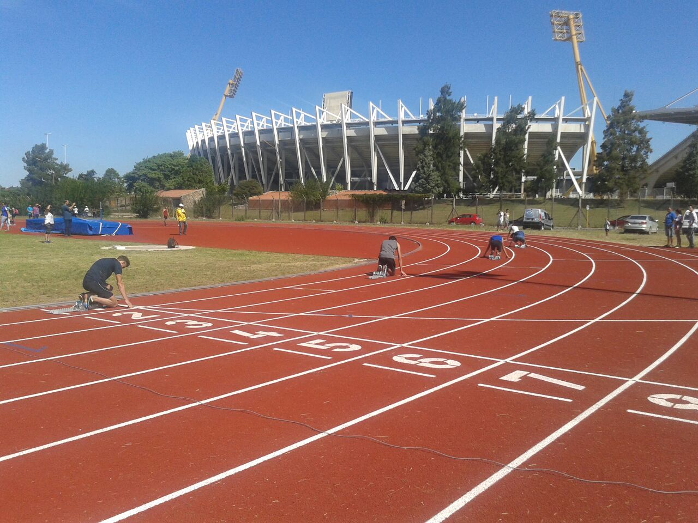
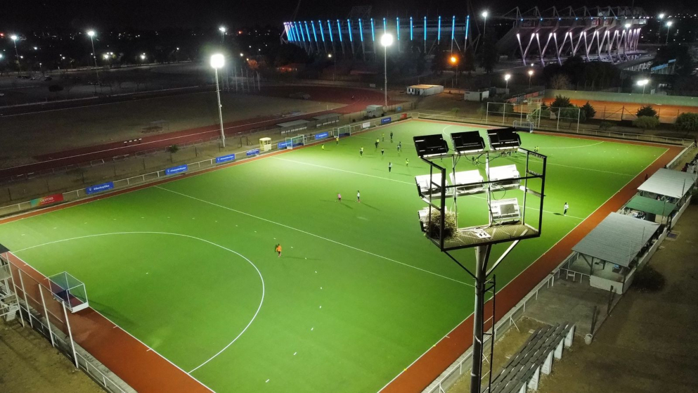

INSTALACIONES
Capacidad
El Estadio Mario Alberto Kempes es el más grande de la provincia de Córdoba y uno de los principales del país. Actualmente tiene una capacidad aproximada para 57.000 espectadores, tras las remodelaciones y ampliaciones realizadas en 2011, cuando se construyeron nuevas tribunas y se mejoró la infraestructura para la Copa América. Antes de esas obras, su capacidad era menor, rondando los 47.000 lugares, pero las reformas lo convirtieron en un escenario moderno, preparado para recibir partidos de gran magnitud, tanto a nivel nacional como internacional.
Tribunas
El Estadio Mario Alberto Kempes cuenta con varias tribunas que lo rodean en su forma ovalada. Originalmente tenía dos cabeceras y dos laterales, pero con las remodelaciones para la Copa América 2011 se ampliaron y modernizaron. Hoy en día, se destacan la Tribuna Artime (popular norte) y la Tribuna Willington (popular sur), que son las más grandes y suelen estar destinadas a las hinchadas. También están las plateas Gasparini y platea Ardiles, ubicadas en los laterales, que ofrecen mejor comodidad y visibilidad del campo de juego. Con estas mejoras, todas las tribunas cuentan con butacas plásticas y accesos renovados, lo que le da al estadio una estética moderna y funcional para eventos deportivos y recitales.
Pista atletismo
El Estadio Mario Alberto Kempes no es solo un escenario para el fútbol, sino también un espacio multipropósito gracias a su pista de atletismo. Rodeando el campo de juego se encuentra una pista de 400 metros de tartán sintético, utilizada para entrenamientos y competencias oficiales de distintas disciplinas del atletismo. Esta pista fue parte de las remodelaciones que buscaban transformar al Kempes en un polo deportivo integral, permitiendo que el estadio sea sede de torneos provinciales, nacionales e incluso internacionales de atletismo. Además, su presencia refuerza la idea de que el Kempes no solo es un lugar para el fútbol, sino para el deporte en general.
Otras instalaciones
Además del campo de fútbol, el Estadio Mario Alberto Kempes cuenta con una amplia variedad de instalaciones que lo convierten en un verdadero complejo deportivo integral. Entre ellas se destacan un centro de alto rendimiento con gimnasios y zonas de preparación física, una pista de atletismo de 400 metros que rodea el campo, canchas auxiliares para entrenamientos, un natatorio olímpico, un polideportivo cubierto para deportes como básquet y vóley, y espacios destinados a actividades recreativas y culturales. Incluso alberga un museo del deporte provincial que rinde homenaje a figuras destacadas del deporte cordobés y argentino. Estas instalaciones hacen del Kempes un polo deportivo versátil, capaz de albergar competencias de distintas disciplinas y eventos de gran magnitud.
